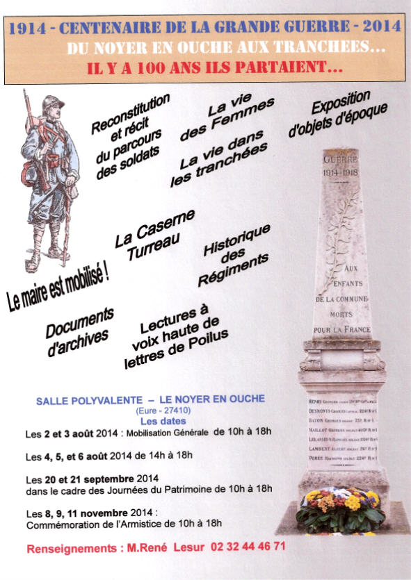
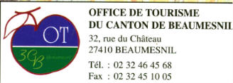
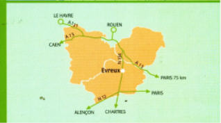

dernière mise à jour de cette page : 26.05.2022
Le drapeau de la Normandie : cliquez et ses évolutions jusqu'à la réunification
Carte de l'Eure - situation de La Godinière
Voici quelques suggestions de visites proches et liens (page sujette à évolution)
Office du Tourisme du Canton de Beaumesnil **
|
Expositions diverses à l'Office de Tourisme de Beaumesnil. Terminé...
Voir : https://tourisme.bernaynormandie.fr/
|
|
L'ancien site internet de l'OT de Beaumesnil : www.tourismebeaumesnil27.fr ne donne plus qu'une présentation sommaire de Beaumesnil
Maison du Pays d'Ouche - 32 Rue du Château Tel : 02.32.46.45.68 Fax : 02.32.45.10.05 BEAUMESNIL 27410 Mesnil-en-Ouche Email : ( ottourismebeaumesnil@wanadoo.fr ne fonctionne plus) Email unique : tourisme@bernaynormandie.fr
Note personnelle :
Depuis la fusion des communautés de communes, les offices de tourisme sont gérés par INTERCOM BERNAY TERRES DE NORMANDIE - Direction déléguée à l’urbanisme, à l’aménagement du territoire, au développement économique et au tourisme https://tourisme.bernaynormandie.fr/ -- https://tourisme.bernaynormandie.fr/demandez-nous-conseils/ ---
Accueils
touristiques à Bernay
,
Beaumont le Roger
, Beaumesnil, Le Bec-Hellouin,
Brionne
et
Broglie
,
La gestion des Offices de Tourisme est assurée par Office de Tourisme Bernay Terres de Normandie 02.32.44.05.79 - www.tourisme.bernaynormandie.fr - tourisme@bernaynormandie.fr -
Ce numéro de téléphone
centralise tous les appels qui sont redirigés par une opératrice vers le
lieu correspondant à la demande,
Les circuits de randonnées évoluent...
C'était avant la fusion des intercommunalités : www.normandieweb.org/27/beaumesnil/beaumesnil/ - www.france-pittoresque.com/archives/villes/v27.htm
Promenades et Randonnées à pied,
à cheval, à VTT
:
En 2019, un audit sur les chemins de randonnées a
été réalisé, et sera présenté aux Maires de l'Intercommunalité début
décembre 2019.
|
..
|
1914 - 2014
Le projet qui me tient à coeur a reçu un avis enthousiaste de la part du Conseil Municipal du Noyer en Ouche. L'ouvrage est sur le métier...
Reconstituer le parcours militaire des Poilus qui ont leur nom gravé sur le Monument aux Morts du village, ainsi que du Caporal Charles Sainturette, alors Maire de cette commune.
L'idée est de proposer cette exposition dès le 2 août 2014 aux habitants du village bien sûr, mais aussi d'y inviter les membres de leur famille, desendants, cousins, etc... et toutes les personnes intéressées par cette tranche d'histoire tragique qu'à vécu notre patrie ... aucun village n'a été épargné...
Il est nécessaire d'entretenir et de transmettre leurs mémoires en respect du sacrifice de leurs vies, pour une liberté dont nous sommes les héritiers. Pour suivre l'actualité de ce projet, voir sur la page Le Noyer en Ouche .
 René Lesur - |
|
Les principales dates à retenir pour 2015 dans le canton de Beaumesnil : cliquez |
|
Mise à l'Honneur des Communes du canton de Beaumesnil à l'Office de Tourisme
Les communes du Canton de Beaumesnil ont commencé à
Ainsi, elles nous font mieux connaître leur histoire, mais aussi leur vie
actuelle
Le programme :
La Barre en Ouche : 13 Juin 2015 au 3 juillet 2015 Un siècle et plus à La Barre...
Expositions visibles à l'Office de Tourisme du Canton de Beaumesnil Maison du Pays d'Ouche - 32 Rue du Château Tel : 02.32.46.45.68 Fax : 02.32.45.10.05 Email : ottourismebeaumesnil@wanadoo.fr 27410 BEAUMESNIL
Rappel des présentations des communes : Le Noyer en Ouche : du 28 février au 17 mars 2010 Thevray : du 19 mars au 9 avril 2010 Ajou : du 16 octobre au 5 novembre 2010 Saint Pierre du Mesnil : Du 8 au 28 janvier 2011 Gouttières : du 26 février au 18 mars 2011 Les Jonquerets de Livet : du 29 avril au 19 mai 2011 Saint Aubin le Guichard : du 2 au 22 Juillet 2011 Bosc-Renoult en Ouche : du 3 au 22 septembre 2011 Granchain : du 18 Février au 9 Mars 2012 La Roussière : du 2 Juin au 22 juin 2012 (Expo reportée, date non communiquée) Gisay la Coudre : du 15 septembre au 5 octobre 2012 Saint Aubin des Hayes : du 6 octobre au 26 octobre 2012 Landepéreuse : du 17 Novembre au 7 Décembre 2012 Epinay : du 20 Avril au 9 mai 2013 Sainte Marguerite en Ouche : du 24 Mai au 13 juin 2014 La Roussière : du 5 juillet au 25 juillet 2014 Exposition prolongée jusqu'au 15 août 2014 Beaumesnil : du 18 Octobre 2014 au 27 Novembre 2014
Toutes ces manifestations ont laissé de nombreux et formidables souvenirs parmi les participants.
|
|
|
 |
|
Fête Cantonale de la Randonnnée - Gratuit - Voir le programme |
Bienvenue sur TraceGPS, le site collaboratif des amoureux de la nature et du High Tech.Laissez-vous guider ! http://www.tracegps.com/ - contact@tracegps.com11 circuits du canton de Beaumesnil sont déjà référencés |
Le Village : Le Noyer en Ouche (cliquez pour visite et détails)
Le Canton de Beaumesnil : Composé de 17 Communes, Visite guidée et Histoire : cliquez...
Beaumesnil :
Le Château, ses Bassins, ses Jardins, son Parc et le
Musée de la Reliure.
Présentation du château, histoire, actualités, évènements, horaires d'ouvertures, VOIR le site internet du Château de Beaumesnil - https://www.chateaubeaumesnil.com/ .
|
Le Potager de Beaumesnil - 1001 légumes
- http://www.1001legumes.com
Horaires et programme sur le site http://www.1001legumes.com Avec trois journées majeures : Au printemps : Papotages au Potager En été, dernier dimanche de Juin : Symphonie du Miel Le dernier Week-end de septembre : Festival des 1001 Légumes Voir tout le programme sur http://www.1001legumes.com |
|
Communauté de Communes du Canton de Beaumesnil. ( 3 C B ).
Jusqu'au 31 décembre 2016, les 17 communes
de l'ancien Canton de Beaumesnil étaient regroupées
Au 1er Janvier 2017, la
Communauté de Communes de Beaumesnil - 3CB - a fusionné avec quatre autres
pour devenir
https://www.bernaynormandie.fr/carte/ -
https://www.bernaynormandie.fr/annuaire-services/ La gazette du Pays d'Ouche est consultable sur le site de la commune nouvelle de Mesnil-en-Ouche www.mesnil-en-ouche.fr
|
|
Projet de Territoire, Réseau Communication à la 3 CB
Les événements culturels dans la région
Le Canton de Beaumesnil : Composé de 17 Communes, Visite guidée et Histoire : cliquez...
La Région : Le Pays d'Ouche : Visite guidée et Histoire : cliquez...
Le Pays Risle - Charentonne : Description : cliquez...
|
|
 |
|
|
|
|
Comité Départemental du tourisme de l'Eure
Eure Tourisme
Bd Georges Chauvin
https://www.eure-tourisme.fr/ |
Comité Régional du Tourisme
http://www.normandie-tourisme.fr/docs/1107-1-contacts-presse.pdf |
et pour compléter : visiter http://lumin.essence.free.fr/e1_tourisme.htm
Le nouveau site du Conseil Général de l'Eure : Le site du département : https://eureennormandie.fr/
Carte de l'Eure - situation de La Godinière
S u i t e :
Le Canton de Beaumesnil
:
Visite guidée et Histoire : cliquez...
La Région : Le Pays d'Ouche : Visite guidée et Histoire : cliquez...
Le Pays Risle - Charentonne :
Description : cliquez...
|
Retour
Les Produits
ou
Accueil ou
Plan du
site |
Écrivez nous pour donner votre impression et votre suggestion, merci.
Ma messagerie est protégée par Avast
Conception et Réalisation : René Lesur
Les Livres de la Bibliothèque :
Cliquez ici